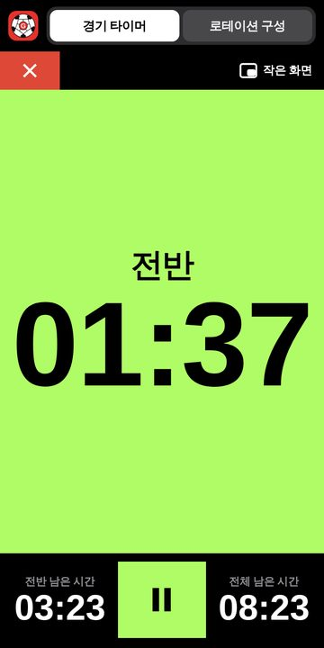
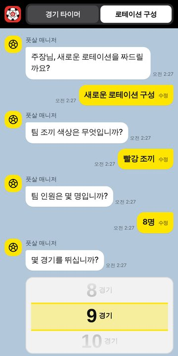
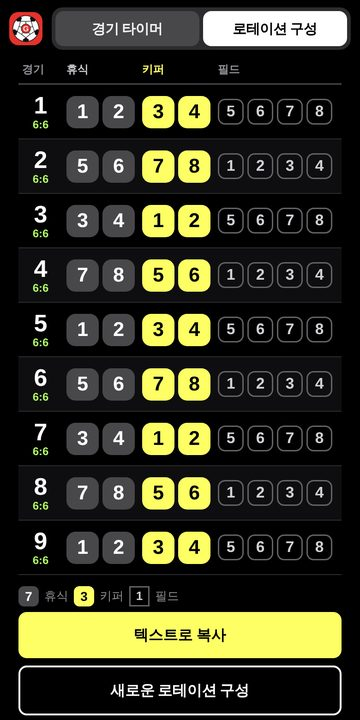

풋살 경기 타이머
- 전·후반 시간을 휠로 맞추고 ▶ 한 번이면 끝 (30초~10분, 10초 단위)
- 시작·종료 직전 3·2·1 카운트다운과 휘슬·부저음 알림
- 키퍼 교체 10초 전 알림, 교체 시 15초간 시계 멈춤
- 경기 종료 후 막공 30초 동안에도 시계가 계속 흐름
- 화면이 꺼지거나 다른 앱을 써도 소리가 정확히 울림
- 멀리서도 보이는 전광판 화면, 다른 앱 위에 띄우는 작은 화면

지라운드와 이리차 회원을 위한 풋살 도우미입니다.
무분별한 배포를 금지합니다.



지라운드 · 이리차 전용 · 링크를 외부에 공유하지 말아 주세요.